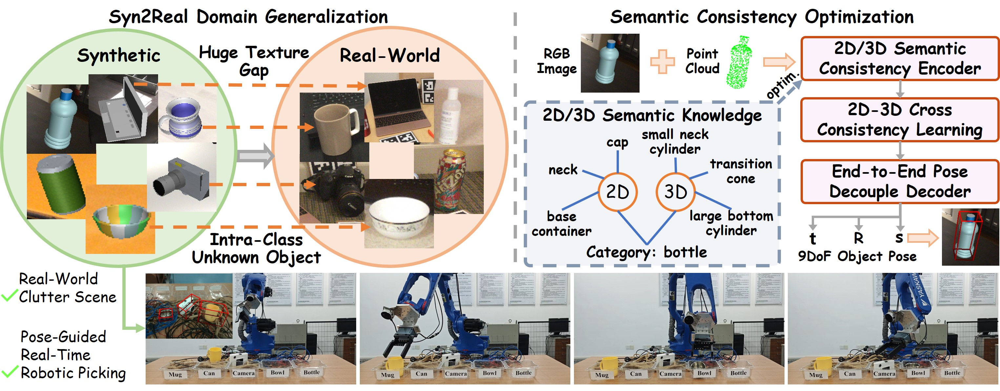
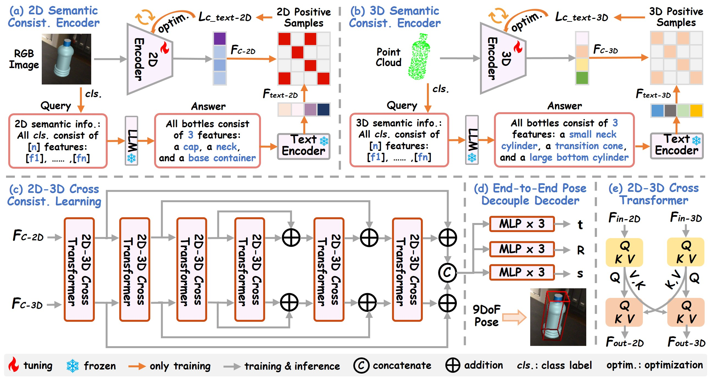
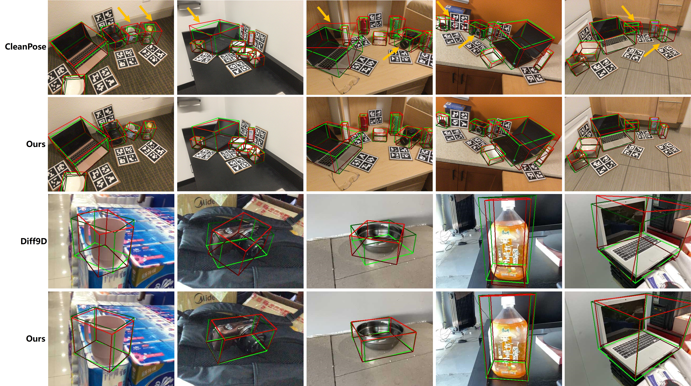
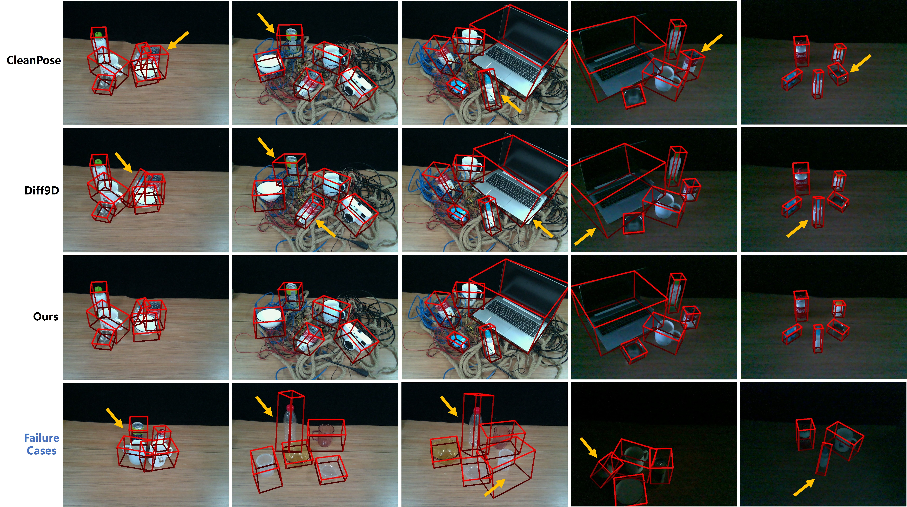

Left: Syn2Real domain-generalized GenCOPE task setting, which aims to achieve generalization between intra-class unknown objects from synthetic to real-world domains. Right: 2D/3D semantic consistency optimization for end-to-end pose regression, where the dashed box indicates that it is used for optimization only during training.

GenCOPE comprises four modules: (a) and (b) illustrate the proposed 2D and 3D semantic consistency encoders, which impose training-time constraints to emphasize intra-class semantic invariances. (c) presents the proposed 2D-3D cross consistency learning module that fuses two-modal features, where the 2D-3D cross transformer architecture is detailed in (e). (d) denotes the end-to-end pose decouple decoder, which regresses the full 9DoF object pose.

Qualitative results comparison with CleanPose on REAL275, and Diff9D on Wild6D. The red and green boxes denote the estimated and ground-truth results, respectively.

Qualitative comparison with CleanPose and Diff9D, and failure cases in real-world robotic scenarios.
@InProceedings{Liu_2026_NeurIPS,
author = {Liu, Jian and Sun, Wei and Dai, Zhenqi and Yang, Hui and Xiao, Jian and Sebe, Nicu and Zhao, Na},
title = {GenCOPE: Syn2Real Generalized Category-Level Object Pose Estimation for Robotic Picking},
booktitle = {Conference on Neural Information Processing Systems (NeurIPS)},
year = {2026}
}